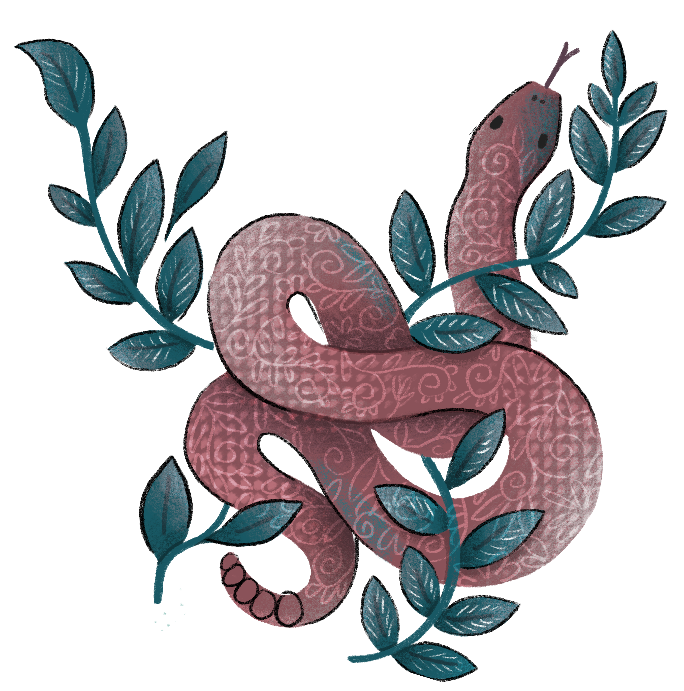
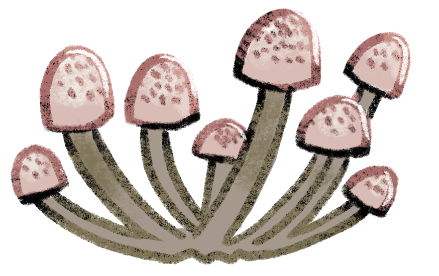
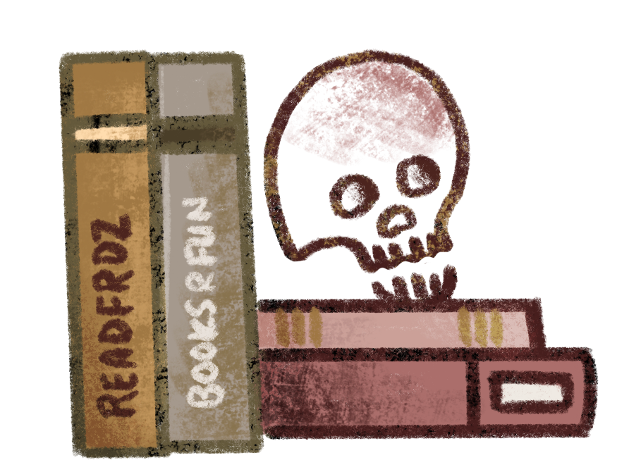
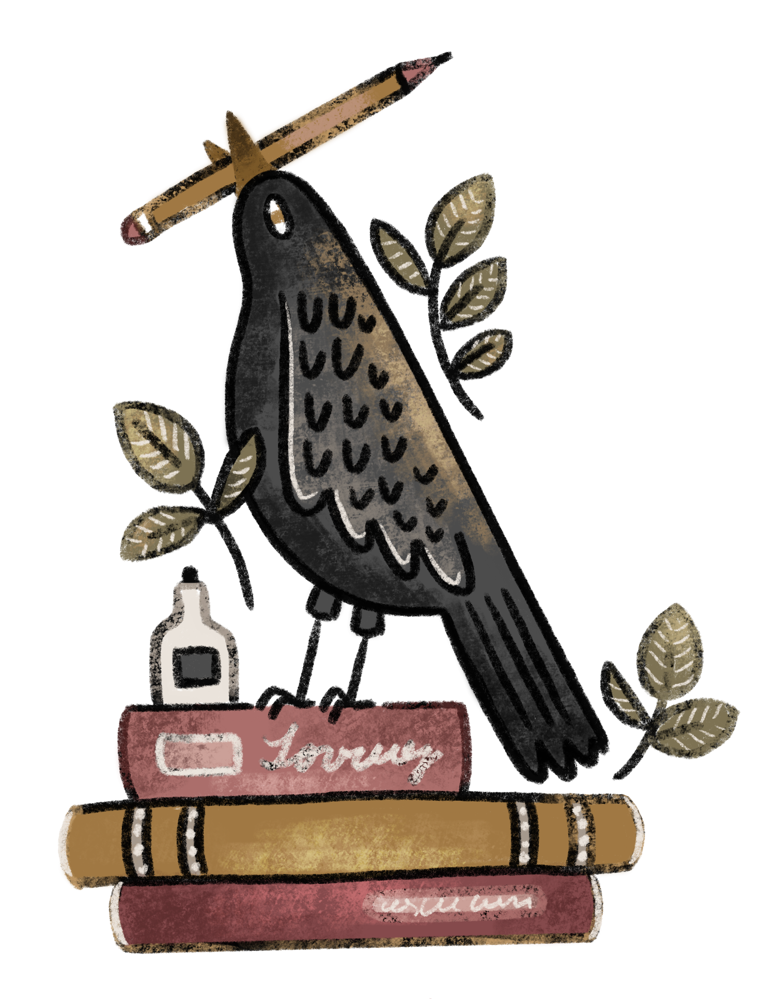
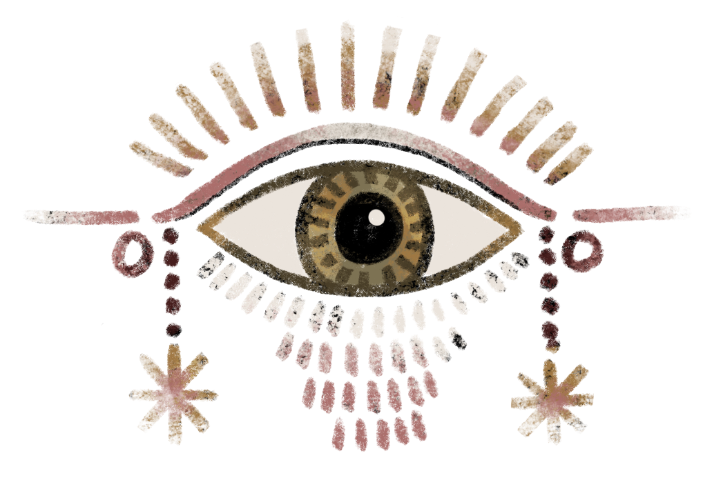

Stories for the strange & sentimental
Come in. The stories have been waiting.
Old stories, strange magic, and impossible loves.
The tea is hot, the woods are haunted, and the books have been locked away for far too long.


The Storybound Archive
For decades, these stories have traveled with me—changing shape as I did and gathering pieces of every life I lived along the way.
Now I’m opening the archive, one story at a time, to share the worlds I created, the people who found me there, and the person I was when each one began.
Stories have a way of finding the people they were written for.Maybe one of these has been looking for you. Beyond the archive doors Every Story Has a Beginning Find out what led me there. Follow the thread →



About the author / possible warning
Hi, I’m Lexi.
Tea witch. Chaos harbinger. Cheerful woodland goblin.
I write strange, magical stories for people who romanticize thunderstorms, candlelight, and the smell of old books. The literary equivalent of sunshine filtering through the trees onto mushrooms growing from something best left undisturbed.
My stories are filled with complicated women, ancient magic, dark woods, inconvenient feelings, and characters who would burn down the world for the people they love.


Where to find me